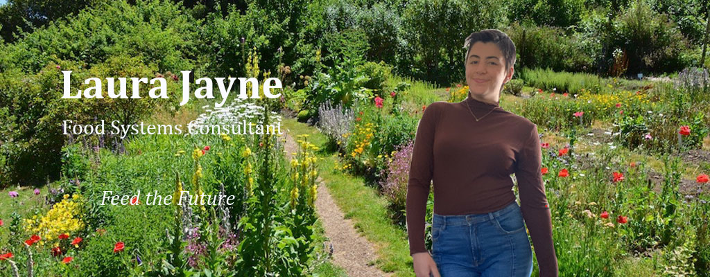

Laura Jayne is pursuing a double major in Food Studies and Environment, Sustainability, and Policy. She is also excited to be an Information, Management, and Technology minor in the iSchool. She would like to learn how to direct data science towards curating food systems that prioritize sustainability and accessibility. Laura is very passionate about upholding labor rights within the food system and maintaining robust nutritional literacy in our communities. She is a pretty good chef. They can also crochet, ice skate, sail, make beautiful excel sheets, and give great presentations. They are also very proud of winning 2nd place in a Policy Memo competition from the Maxwell School in 2017. She enjoys reading, hanging out with her friends, and dancing to the Barbie soundtrack. They are an only child from Arlington, VA, and loves to make the people around them laugh. She also has three cats that she misses dearly. Laura is very excited to develop their coding skills this semester and make a beautiful website that will most likely be food related.